Dialog på Tværs
Web accessibility assessment and improvements
Project Description
Since taking over the website of Dialog på Tværs from the previous web administrator, I’ve been working to improve its web accessibility.
The website is built using WordPress and Elementor, which natively offer many accessible elements. I’ve been focusing on ensuring that these features are properly implemented and function well in terms of accessibility.
In this case, I’ve been using WCAG 2.2 Level AA as a reference.
Visit Dialog på Tværs (external link)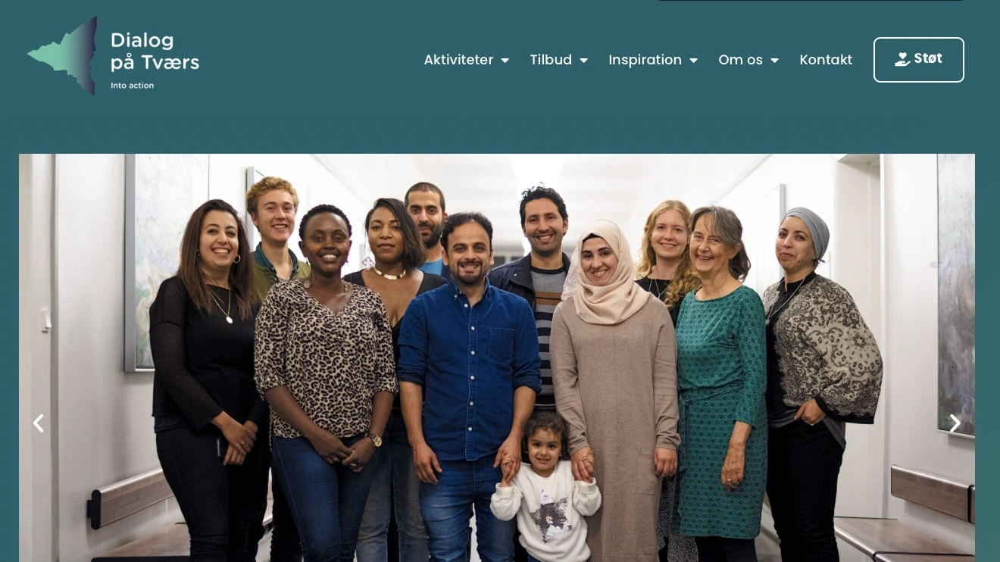
Accessibility Assessment
1.1.1 Non-text Content
I’ve added alt text to nearly all images. Currently, some images on the less prominent pages are missing alt texts, as we are in the process of rebuilding the site and frequently adding or deleting images. Some of the alt texts will need grammatical refinement by native Danish speakers.
1.2.2 Captions (Prerecorded)
All the videos on Into Action are already captioned. However, the videos on Tinget are missing captions. I’ve postponed adding captions for now, as these video meeting archives are lengthy and will require native Danish speakers to complete the task.
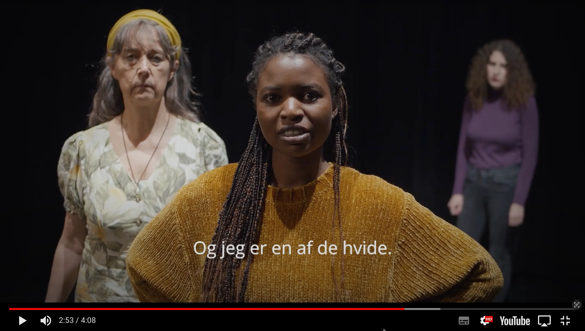
Click to enlarge
1.3.2 Meaningful Sequence
I regularly test the content’s reading order using the VoiceOver screen reader, especially given the website's frequent use of two-column layouts.
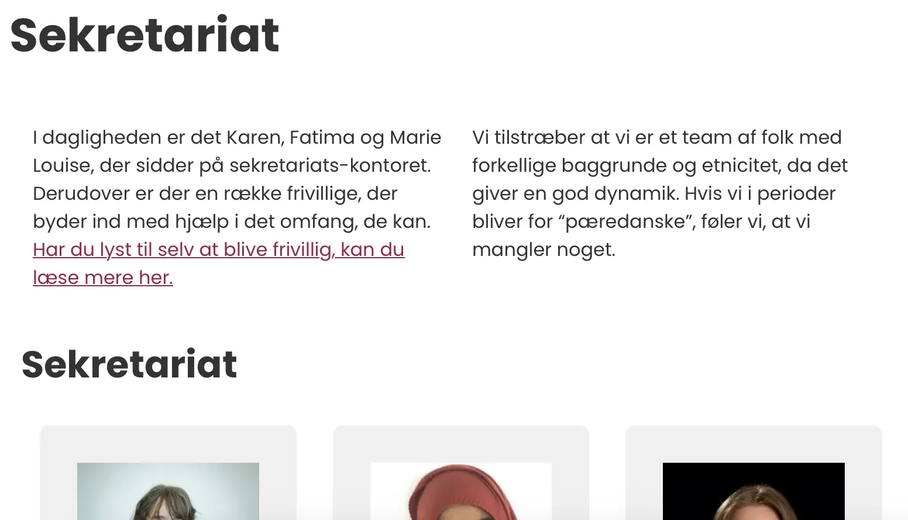
Click to enlarge
1.3.3 Sensory Characteristics
All icons, colours, and shapes are accompanied by text to supplement their meaning.
1.3.4 Orientation
While Elementor natively supports both portrait and landscape views, I ensured that larger images and navigation elements don’t collapse in portrait mode.
1.3.5 Identify Input Purpose
Elementor supports identifying input purposes, but I made sure this functionality is properly coded.
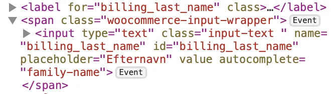
Click to enlarge
1.4.1 Use of Color
The website does not rely solely on colour to convey information.
1.4.2 Audio Control
No videos on this website play automatically.
1.4.3 Contrast (Minimum)
I reviewed all text and background colour combinations using Adobe Color. I updated some colour combinations, such as switching from lime blue and white to white and black, to improve contrast.
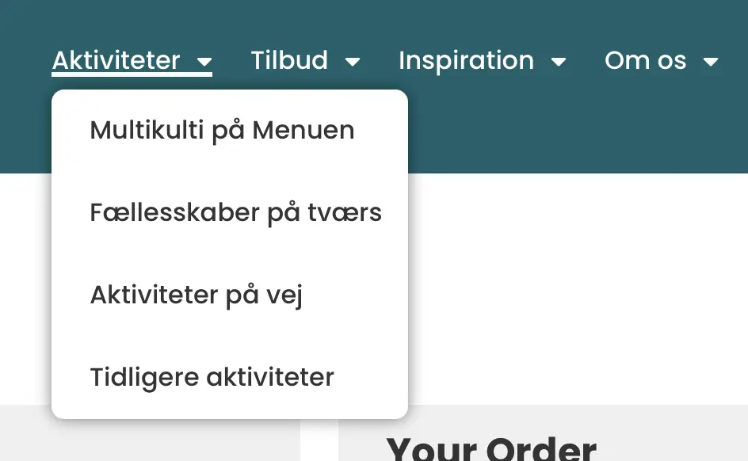
Click to enlarge
1.4.4 Resize Text
I replaced all pixel units with rems to support text resizing.
1.4.5 Images of Text
Alt texts were added for images of text, such as flyers and posters.
1.4.10 Reflow
Elementor supports limiting horizontal scrolling, ensuring the site content reflows properly.
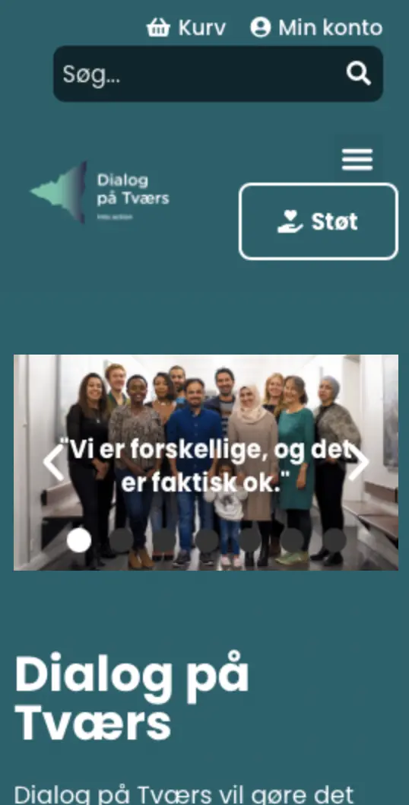
Click to enlarge
1.4.11 Non-text Contrast
I ensured that buttons and forms have sufficient contrast against their backgrounds.
1.4.12 Text Spacing
I ensured the line height is at least 1.5 times the font size (1rem), and the space between paragraphs is at least twice the font size.
1.4.13 Content on Hover or Focus
Changes in content on hover or focus are limited to the dropdown menu, as requested by the organisation.
2.1.1 Keyboard and 2.1.2 No Keyboard Trap
I tested all interactive elements to ensure they are operable using a keyboard interface. I also verified that focus can be moved away from components solely through the keyboard.
2.2.1 Timing Adjustable
Initially, the carousel on the homepage auto-played, but since I couldn’t find a way to enable stopping it, I disabled the auto-play feature.
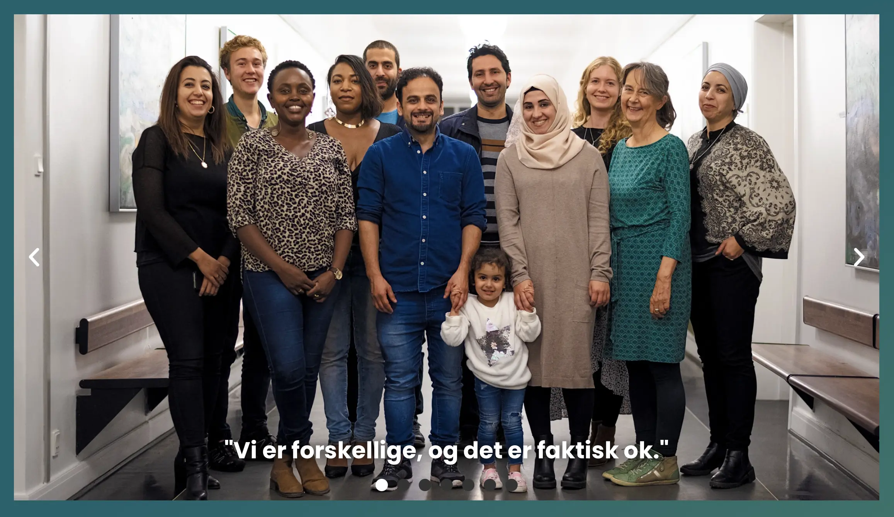
Click to enlarge
2.4.1 Bypass Blocks
Elementor includes a default bypass block, but I styled it to make it more prominent and easier to use.
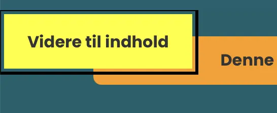
Click to enlarge
2.4.2 Page Titled
Page titles are correctly set and ordered logically by default.
2.4.3 Focus Order
I tested the focus order, paying special attention to the purchasing interfaces to ensure usability.
2.4.4 Link Purpose (In Context)
I rewrote almost all the in-text links from vague phrases like “click here” to more specific and descriptive terms.
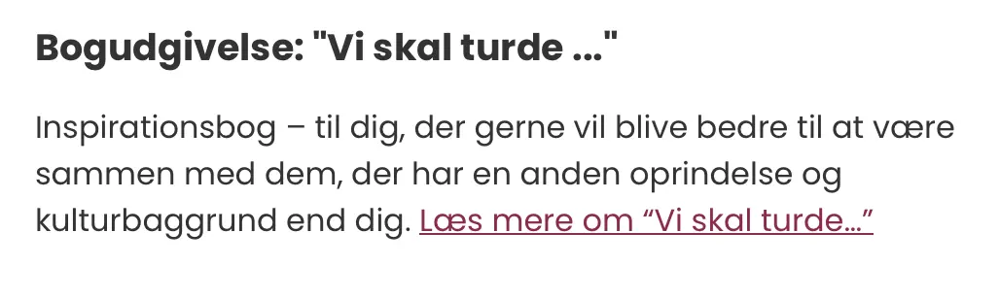
Click to enlarge
2.4.5 Multiple Ways
I ensured that multiple ways are available to access major sections like upcoming events, contact information, and theater details.
2.4.6 Headings and Labels
I’m reorganizing heading markups into a meaningful hierarchy. However, since another editor also works on the site and isn’t specialized in web accessibility, we sometimes need to collaborate to decide on proper headings.
2.4.7 Focus Visible
I restyled the focus states throughout the site to make them more visible.
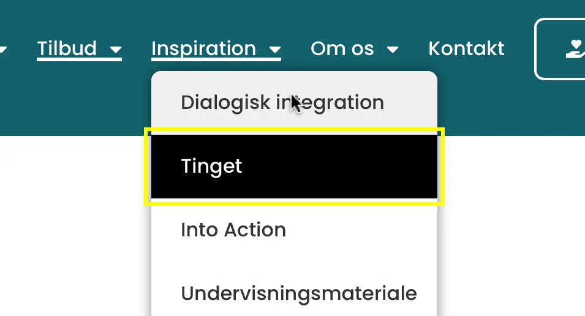
Click to enlarge
2.4.8 Location
I added breadcrumbs above the main content area to help users easily identify their location on the site.
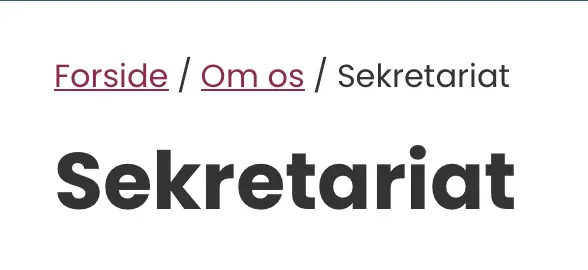
Click to enlarge
2.4.11 Focus Not Obscured (Minimum)
No elements on the site obscure others, except for the dropdown navigation menus.
2.5.3 Label in Name
Most input fields are accompanied by text labels, but the search input in the header is missing a label. I’m currently discussing this with the admin team.
3.1.1 Language of Page
The default language is set to Danish in WordPress.
3.2.3 Consistent Navigation
The website maintains consistent header navigation across all pages.
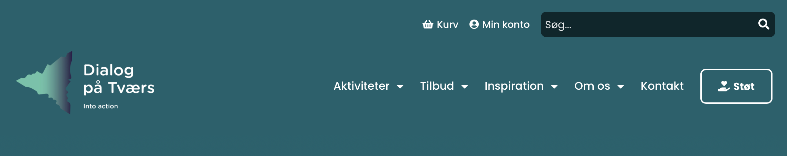
Click to enlarge
3.2.6 Consistent Help
While there isn’t a dedicated, consistent help feature, every page does include a link to the contact page.
3.3.1 Error Identification
Elementor provides default error identification features.
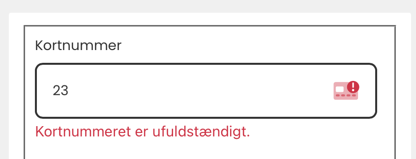
Click to enlarge
3.3.2 Labels or Instructions
Labels and instructions are provided whenever user input is required.
3.3.3 Error Suggestion and 3.3.4 Error Prevention (Legal, Financial, Data)
Currently, there’s no error suggestion feature. Implementing this would require deeper code edits, which could be risky.
3.3.7 Redundant Entry
There are no redundant entry requirements by default.
3.3.8 Accessible Authentication (Minimum)
The payment confirmation process may involve some non-accessible authentication elements, which I am unable to modify directly.
4.1.2 Name, Role, Value
Testing is currently ongoing.
4.1.3 Status Messages
All status messages currently appear at the top of the page. I’m working on changing this behaviour.